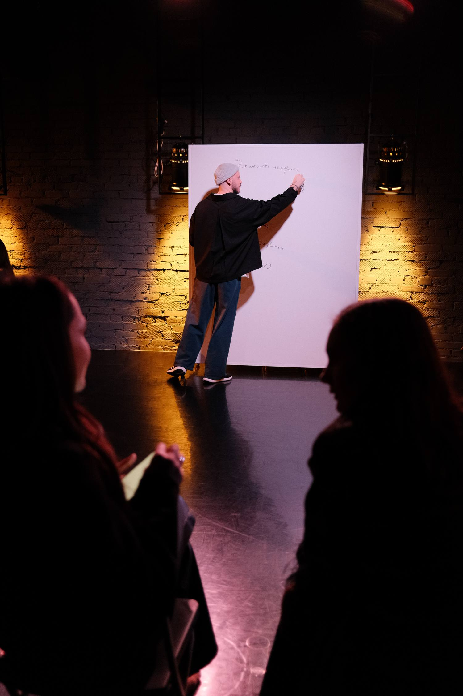
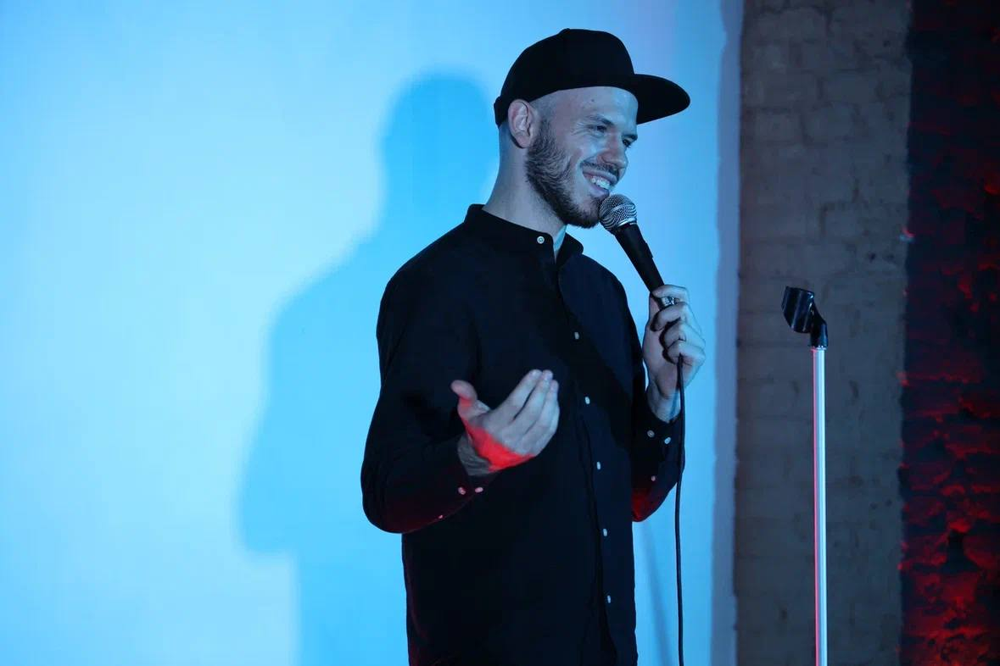
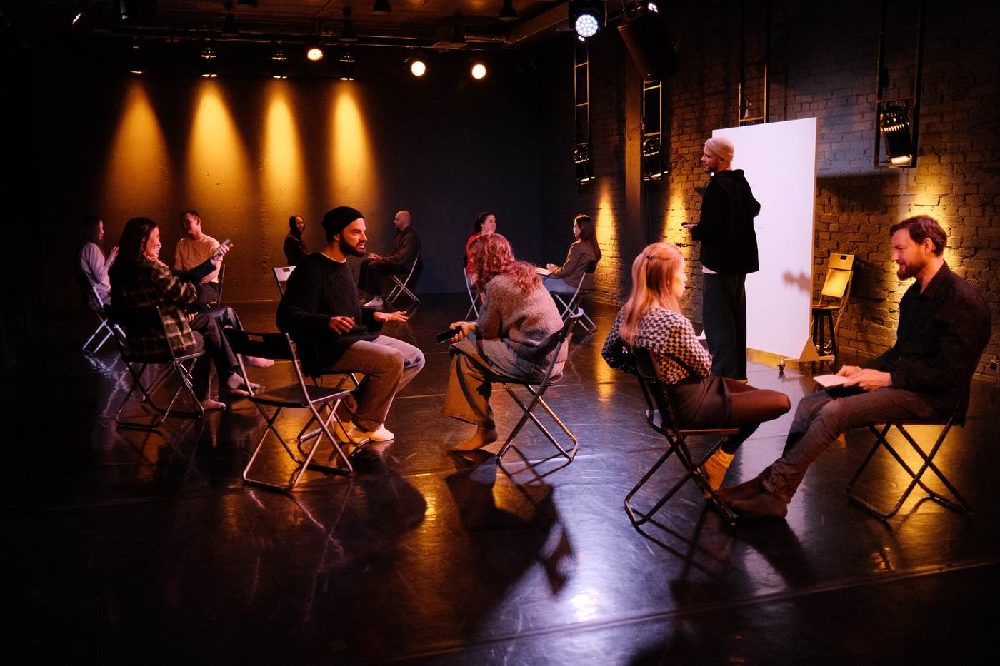

Курс устного сторителлинга. За 4 недели вы научитесь рассказывать истории из своей жизни так, чтобы их слушали и досматривали до конца — как кино.

занятие по методике «кино словами»Ни одна из этих ситуаций — не про скучную жизнь. Все они — про отсутствие инструментов. А инструментам можно научиться.
Историю можно рассказать по-разному: снять фильм, написать книгу, записать Reels — или просто рассказать человеку напротив. Здесь мы работаем с последней формой — самой частой и самой недооценённой.
Устный сторителлинг — навык ярко и интересно рассказывать истории из собственной жизни: в разговоре, на работе, со сцены. Так, чтобы вас не просто поняли, а прочувствовали.
Мы не учим продающим выступлениям, презентациям и рекламным текстам — это отдельные навыки. Курс про фундамент: превращать свой опыт в истории, которые интересно слушать. Этот фундамент потом усиливает всё остальное — работу, блог, сцену.
Курс идёт 4 недели. Каждая неделя — полный цикл работы с новым инструментом:
Один инструмент и домашнее задание. Смотрите когда удобно, применяете сразу на своей истории.
Онлайн, в мини-группах. Рассказываете, слушаете других, получаете живой зрительский отклик.
Дорабатываете именно ваши истории и вместе режиссируете их перед следующим занятием.
Запись историй и упражнения. Камера — тренажёр: вы впервые видите себя глазами слушателя.
теория → практика → зрительский отклик → личная доработка → новая практика
Поэтому в конце у вас не «понимание инструментов», а истории, которые вы рассказали, доработали и рассказали снова — лучше.
Каждый следующий блок опирается на предыдущий. К финалу у вас не набор приёмов, а собственная система рассказывания историй — 4 недели, как собирается фильм:
Превращаете воспоминания в сцены, которые возникают в голове слушателя. Вместо пересказа фактов — кадры, которые хочется смотреть дальше.
истории цепляют с первых секунд
Выстраиваете сцены так, чтобы держать внимание и раскрывать историю постепенно — без лишней информации.
вас хочется дослушать до конца
Управляете темпом, паузами и эмоциональной насыщенностью — слушатели не следят за событиями, а проживают их вместе с вами.
истории воспринимаются как кино
Собираете одну и ту же историю по-разному — под аудиторию, ситуацию и цель. И готовите одну из историй к финальному показу.
несколько отработанных историй + премьера на финальном показе
яркие истории в собственной жизни — даже те, что казались обычными
их так, чтобы держать внимание от первой фразы до последней
события через кино в голове слушателя, а не пересказ фактов
вниманием, эмоциями и темпом рассказа
одну историю по-разному — в зависимости от того, кому и зачем рассказываете

Тренер по публичным выступлениям и сторителлингу, актёр театра и кино. 7 лет учит людей рассказывать истории — на сцене и в жизни.
На стыке актёрского мастерства, техники речи и импровизации родилась методика «кино словами»: сторителлинг не как набор шаблонов, а как умение создать у слушателя ощущение, будто он сам оказался внутри истории. Методика сложилась в преподавании — и прошла проверку сценой.
Расписание. Групповые занятия — вечером, раз в неделю, с 19:00 до 21:30, во вторник, среду или четверг. День выберем вместе с группой.
Нагрузка. 4–5 часов в неделю: занятие, личная встреча, видеоурок и 30–60 минут домашней практики.
Группа. Мини-группа до 10 человек: достаточно людей для живой аудитории — и достаточно мало, чтобы каждый рассказывал на каждой встрече.
Формат. Онлайн, из любого города. Камера, наушники и тихое место на 2,5 часа. Истории у вас уже есть.
Если бы мы ставили голос и дыхание — да, очный формат был бы сильнее. Но мы учимся рассказывать истории. Этот навык растёт из другого: регулярная практика с разными слушателями, живая реакция и многократная доработка рассказа. Именно так построен курс — и в онлайне это работает полноценно.
Онлайн при этом добавляет своё: больше практики вместо дороги, участники из разных городов и записи ваших рассказов, на которых виден реальный рост от первой недели к четвёртой.
«Последние 4 года я тренирую людей в крупных онлайн-программах по развитию речи. Этот курс собран из того опыта — онлайн здесь не компромисс, а осознанно выбранный формат».
Полный курс: 4 групповых занятия, 4 личные встречи со Стасом, видеоуроки, чат участников и финальный показ.
Стартуем, как только соберётся группа. Напишите Стасу — он сориентирует по датам и забронирует за вами место.

Напишите Стасу — он ответит на вопросы и расскажет о ближайшем потоке.
телеграм @stassbondarev — ответ лично, без ботов и рассылок